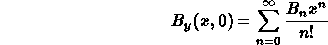
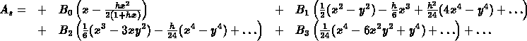
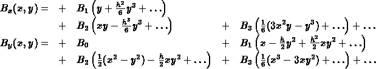

Note the factorial in the denominator. The field coefficients have the following meaning:
B1 = (del By / del x);
a positive value corresponds to horizontal focussing of a positively charged particle.
B2 = (del2 By / del x2).
B3 = (del3 By / del x3).

Taking curl A in curvilinear coordinates, the field components can be computed as

It can be easily verified that both curl B and div B are zero to the order of the B3 term. Introducing the magnetic rigidity Brho, the multipole coefficients are computed as
Kn = e Bn / ps = Bn / B rho.
hansg, June 17, 2002